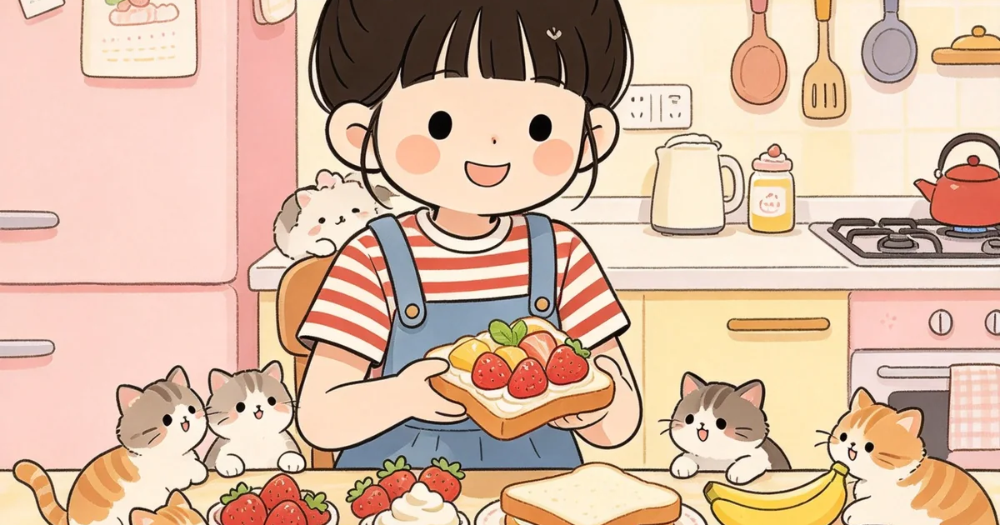
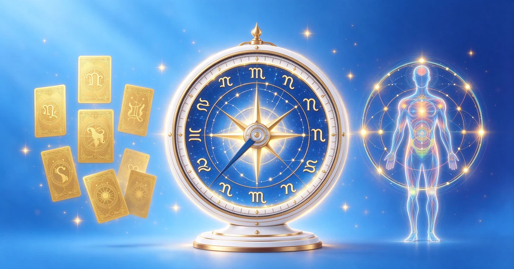
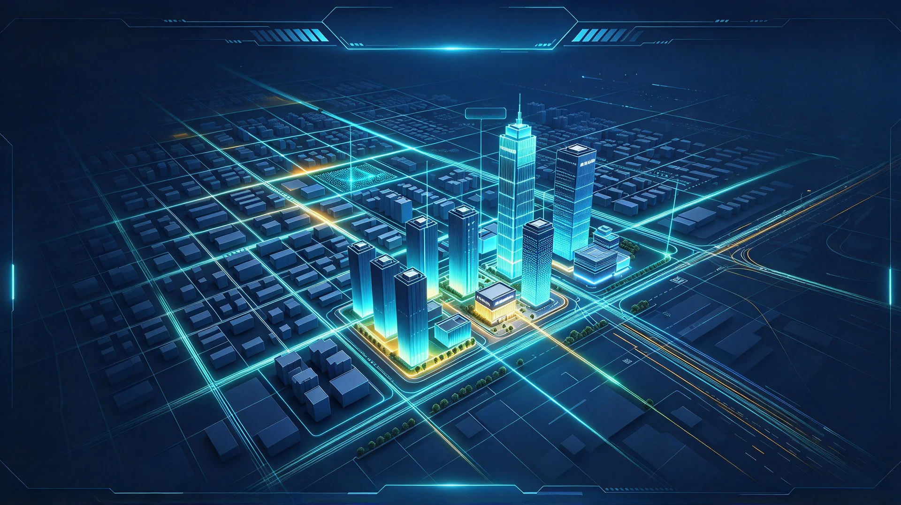
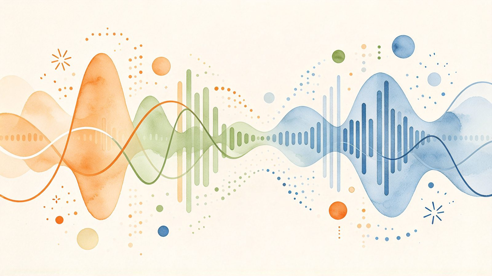
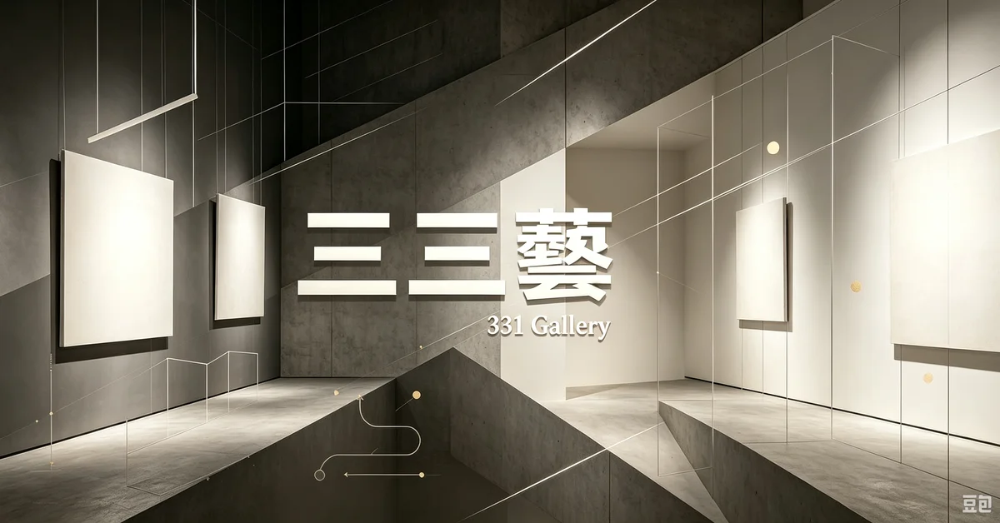

內容站點佈局
依產業打造垂直內容站點，知識庫與商品展示並進，建立權威入口。
- 跨產業領域規劃
- 知識庫＋商品展示
- 單一入口整合
從內容到流量、從曝光到數據，一站式完成數位佈局。
依產業打造垂直內容站點，知識庫與商品展示並進，建立權威入口。
搜尋引擎、語音助理與生成式 AI 三面向優化，讓品牌被找到、被引用。
內容行銷、社群與流量獲取並進，把內容變成持續進站的動能。
內容持續產出、自動更新，維持搜尋新鮮度，讓流量不間斷。
不是做完網站就結束，而是一套持續成長的循環。
搜尋、社群、AI 推薦全渠道露出
內容站點轉化訪客為客戶
流量與行為數據回饋
以數據驅動內容與策略升級

寓言 × 金句 × 遊戲 × 測驗的沉浸式特殊版型網站，釋放無限想像力。

星座算命 × 塔羅盤 × 人類圖最強旗艦平台，免費線上算命運勢。

不動產區段行情、租金地圖與試算、都市更新投資分析的專業入口。

28 座音樂主題互動站，用五種方式重新愛上音樂，讓音樂可以被玩、被聽、被看懂。

當代東方美學 Grid 圖庫，收錄陶藝、雕塑、茶道具、文玩、玉石等藝術作品。
橫跨千年的作曲家與音樂作品動態資料庫，收錄 30 位音樂大師與 30 大動態功能。

出土於湖北隨州的戰國早期青銅禮樂重器，65 件編鐘音域跨五個半八度，一鐘雙音，改寫世界音樂史的驚世發現。

一百位金庸江湖人物的心理畫像，用現代心理學透視刀光劍影之外的愛恨情仇與人格底色。

當代藝品展售與藝術家平台，以數位畫廊形式呈現精品藝術收藏，匯聚兩岸三地新銳與資深藝術家。

人寵共居建築設計平台，毛孩與空間的對話，寵物空間設計與動物行為的專業入口。

用邏輯理解毛孩，寵物品種圖鑑、照護知識與生活邏輯的整合內容平台。

台灣房地產資訊與建案資料平台，提供房屋交易、行情與區域分析，購屋與投資者的專業參考入口。

當瑞士心理學大師榮格遇見東方易經智慧，探索集體潛意識與卦象的神秘對話。

以紅樓夢為本，還原大觀園的亭台樓閣、山水庭院，見證古典園林的詩意空間。

從十大古代經典文獻還原中國古典建築之美，探索斗拱飛簷與營造法式的千年智慧。

寵物品種圖鑑百科，走進每一種毛孩的世界，從飼養到照護一次看懂。

寵物照護知識學堂，用正確觀念守護毛孩，把照護變成一門可以好好學的學問。

寵物友善室內設計靈感，貓狗與人共享的美好空間，從寵物窩到互動設施一次滿足。

AR 增強現實虛擬試衣，線上即時預覽服裝穿搭效果，數位人台與智慧尺寸推薦的沉浸式購物體驗。

透過遊戲化方式學習經濟學原理，從供需法則到賽局理論，在互動中理解市場運作與決策邏輯。

十二星座星圖解析、每日運勢、紫微斗數與占星術結合，探索星象與人性的神秘對應。

以三國經典戰役解析賽局理論，從空城計到連環計，探索兵法謀略背後的博弈數學與決策智慧。

回歸物物交換的純粹樂趣，社區共享經濟平台，讓閒置物品找到新主人，永續又好玩。

走進 Infucoco 的奇幻世界，獨角獸、彩虹與雲朵共築的夢幻國度，釋放無限想像力與創造力。

探索音樂家的怪癖與天才，從爵士到古典，解構音符背後的靈魂與不為人知的創作祕辛。

在玫瑰花園中尋找心靈療癒，以芳香與自然撫慰日常疲憊，打造屬於你的舒心角落。

超越視覺的靈性感知，探索直覺、第六感與內在智慧的神秘力量，看見眼睛看不到的真相。

LV、Gucci、Hermès、Chanel…世界精品品牌的正確發音教學，從此不再唸錯鬧笑話。
我們不只幫你做一個網站，而是幫你佈局一整座能自己帶來流量的內容站點群。